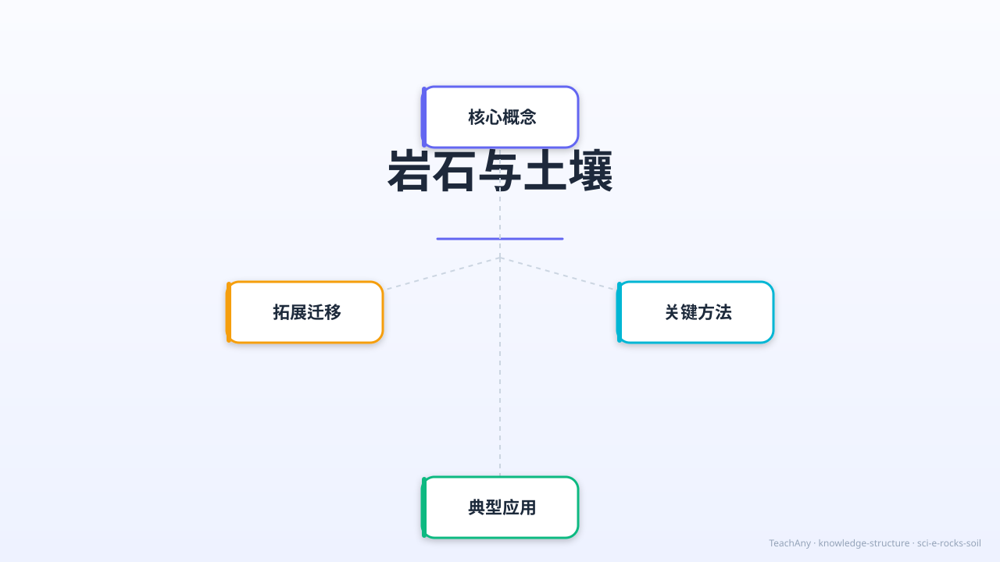

脚下的大地是由什么组成的？路边的石头是怎么来的？
一起来探索岩石与土壤的神奇世界！

对应 2022 课标 · 小学科学 · 地球与宇宙科学领域 · G4
区分火成岩、沉积岩、变质岩的形成方式，说出代表性岩石
描述矿物的颜色、光泽、硬度等特征，理解矿物是岩石的组成单元
说出土壤的四大成分（矿物质、有机质、水、空气）及各自比例
比较沙土、黏土、壤土的特点，说明壤土最适合植物生长的原因
岩石与土壤 · 课程介绍视频 · 1920×1080 · 22秒
用故事开始今天的探索
地球上有很多岩石，路边有鹅卵石，山上有大石头，花盆里有土，农田里有黑土。
这些岩石看起来颜色、纹理都不一样——有的粗糙，有的光滑，有的有纹路。土壤也有沙质的、黏稠的……它们为什么不一样？是怎么形成的？
今天我们来研究岩石的三种类型和形成方式，了解矿物，探索土壤的秘密，发现脚下大地的神奇！
按形成方式分类，三类岩石各有不同的来历
地球内部的岩浆（高温熔融的岩石）
冷却凝固后形成。
🌋 喷出地表冷却 → 玄武岩（细晶）
⛰ 侵入地壳缓慢冷却 → 花岗岩（粗晶）
沙子、泥土、贝壳等碎屑物质
沉积后被压实、胶结而成。
🌊 河流、湖泊、海洋中逐层堆积
📜 常有清晰的层理（岩层纹理）
🦕 常含化石（生物遗迹被保存）
岩石由矿物组成，矿物有固定化学成分和物理特征
| 矿物 | 颜色 | 莫氏硬度 | 光泽 | 常见岩石 |
|---|---|---|---|---|
| ⬜ 石英 | 白色/透明 | 7 | 玻璃光泽 | 花岗岩、砂岩 |
| 🟪 长石 | 粉白/灰色 | 6~6.5 | 珍珠光泽 | 花岗岩（最多） |
| ✨ 云母 | 透明/黑色 | 2~3 | 珍珠闪光 | 花岗岩、片岩 |
| 🟤 方解石 | 白色/无色 | 3 | 玻璃光泽 | 石灰岩、大理石 |
| ⚫ 磁铁矿 | 黑色 | 5.5~6 | 金属光泽 | 铁矿石（有磁性！） |
点击岩石样本，查看颜色、纹理、硬度和用途
选择下方任意岩石，鉴定仪将显示该岩石的完整特征卡片
土壤是地球生命的摇篮，形成需要数千年
岩石风化分解产生的细小颗粒，提供矿物营养元素
溶有无机盐，供植物根系吸收，是植物生长的关键
土壤颗粒间的空隙充满空气，供植物根系和土壤微生物呼吸
动植物遗体分解后的物质，是土壤肥力的来源
将右侧的土壤层名称拖拽到左侧剖面对应位置
颗粒大，排水快
保水差，保肥差
适合：仙人掌等耐旱植物
颗粒小，保水好
透气差，板结
植物根难以生长
颗粒适中，保水透气
有机质丰富，肥沃
适合大多数植物生长
选择正确答案，系统会告诉你为什么
完成互动和练习题，解锁对应成就
回顾核心知识点
岩浆冷却凝固
代表：花岗岩
沉积物压实
代表：砂岩·石灰岩
高温高压变质
代表：大理石
矿物质·有机质·水·空气
壤土最适合植物生长